A rest-pose mesh and a one-line description of a motion in; a keyframe sheet out — sixteen keyframes, three orthographic views each, in register, with the time of every pose — for a rigging tool to animate from. Architecture, node contracts, data formats, metrics and measured results.
An auto-rigger can read motion off pictures instead of guessing it from a sentence, if the pictures agree with each other. This pipeline produces pictures that agree. Its central move is that no view is ever generated alone: the three orthographic renders are placed on one canvas, and a video model animates that single image, so the three views move inside one frame and stay synchronised by construction.
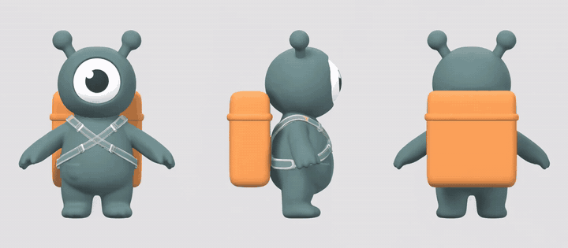
The animated canvas for the mascot. The three panels are one image to the video model.
3views per keyframe, one shared scale and pivot
16keyframes per run, each with its frame index and time
1remote, paid call per run; every other step is local
Pipeline
Seven stages. Geometry is handled locally and deterministically; the only generative step is the animation.
Triptych Split, Keyframe Sheet, Save Keyframe Manifest, Identity QA
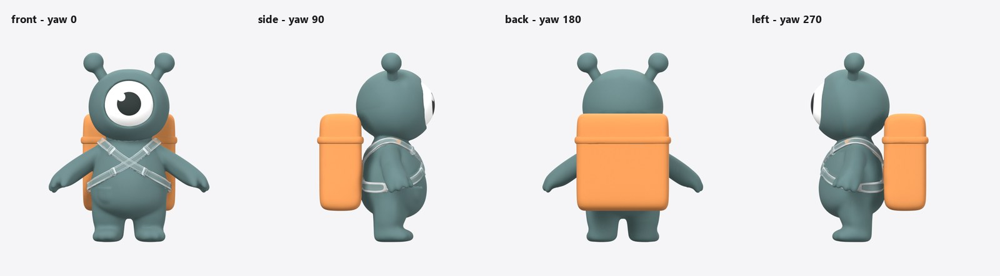
Anchors: the object rotates, the camera never moves, so every view shares one orthographic scale and pivot.
ComfyUI graph
workflows/02_triptych_to_keyframes.json, 17 nodes, drawn from the workflow file. Reads top to bottom.
pack node
partner node — remote, paid
ComfyUI core
writes a file
layout link
Not drawn: timings, frame rate and the motion summary, which run into Keyframe Sheet and Save Keyframe Manifest.
Core nodes used
Node
Responsibility
Runs
LoadImage
Loads one orthographic render.
local
MinimaxHailuo03FirstLastFrameNode
Animates the canvas from its first frame. The only remote, paid step.
remote · paid
GetVideoComponents
Decodes the clip into frames and reports its frame rate.
local
ImageFromBatch
Takes frame 0 out of the decoded batch.
local
SaveVideo
Writes the clip to output/fmm/.
local
SaveImage
Writes the submitted canvas and the finished sheet.
local
Nodes
The eight nodes in the pack, in the order the graph runs them. All are Pillow and numpy and run on the CPU. Contracts below are read from the node classes.
Motion Prompt
FMM_MotionPromptPrompt
Owns the video prompt. The user writes only the action; the node adds the scaffolding that locks the panels, naming each panel by position and describing the background read from the layout.
RuleThe action is placed first, ahead of the layout constraints.
Inputs
action
STRING
raises both arms straight overhead, holds for a moment, then…
Only what the character does. No camera or layout instructions -- those are added for you, in the order that was measured to work.
subject
STRING
clay toy character
How to refer to the character, e.g. 'clay toy character', 'four-legged creature'.
loop
BOOLEAN
False
layoutoptional
FMM_LAYOUT
view_namesoptional
STRING
front,side,back
Used only when no layout is connected.
extraoptional
STRING
Any further constraint, appended at the end.
Outputs
prompt
STRING
summary
STRING
Triptych Compose
FMM_TriptychComposeCompose
Owns the canvas. Crops the three views by one shared window, lays them out left to right and pads to the nearest aspect ratio a video provider accepts.
RuleRefuses views of different sizes instead of rescaling them.
Inputs
view_a
IMAGE
view_b
IMAGE
view_c
IMAGE
names
STRING
front,side,back
gutter
INT
20
pad
INT
20
background
STRING
#E4E4E6
target_ratio
STRING
21:9,16:9,4:3,1:1
Menu of aspect ratios; the closest to the strip is used and the canvas is padded to it. Partner video APIs centre-crop an off-menu canvas, which eats the outer panels.
crop_margin
FLOAT
0.08
Outputs
triptych
IMAGE
layout
FMM_LAYOUT
Triptych Register
FMM_TriptychRegisterRegister
Owns the correction for whatever the video model did to the canvas. Matches frame 0 against the submitted canvas and writes the mapping into the layout.
RuleReports skew and warns above 2%.
Inputs
triptych
IMAGE
first_frame
IMAGE
layout
FMM_LAYOUT
Outputs
layout
FMM_LAYOUT
report
STRING
Sample Keyframes
FMM_SampleKeyframesSample
Owns timing. Picks N evenly spaced frames and records each one's frame index and time in seconds.
RuleKeeps frame 0, the rest pose; drops the last frame for loops.
Inputs
frames
IMAGE
count
INT
16
fps
FLOAT
24.0
loop
BOOLEAN
False
fps_inoptional
FLOAT
Wire Get Video Components' frame-rate output here; it overrides the widget so the timings match the clip that actually came back.
Outputs
keyframes
IMAGE
timings
STRING
Triptych Split
FMM_TriptychSplitSplit
Owns the cut. Turns each sampled frame back into three per-view images using the corrected layout.
RuleApplies the registration transform before cutting.
Inputs
frames
IMAGE
layout
FMM_LAYOUT
Outputs
view_a
IMAGE
view_b
IMAGE
view_c
IMAGE
names
STRING
Keyframe Sheet
FMM_KeyframeSheetDeliver
Owns the human-readable sheet: N rows by three views, with the keyframe index and time on every row.
RuleAdds labels only here, never to an image a model will see.
Inputs
view_a
IMAGE
view_b
IMAGE
view_c
IMAGE
names
STRING
front,side,back
timings
STRING
thumb
INT
256
Outputs
sheet
IMAGE
Save Keyframe Manifest
FMM_SaveKeyframeManifestDeliveroutput node
Owns the handoff. Writes the per-view PNGs, keyframes.json and handoff.txt to the output folder.
RuleRequires real timings; will not run without them.
Inputs
view_a
IMAGE
view_b
IMAGE
view_c
IMAGE
names
STRING
front,side,back
timings
STRING
subject_name
STRING
character
motion_description
STRING
fps
FLOAT
24.0
loop
BOOLEAN
False
output_dir
STRING
from_mesh_to_motion
sheetoptional
IMAGE
fps_inoptional
FLOAT
Outputs
manifest_path
STRING
handoff_text
STRING
Identity QA
FMM_IdentityQACheckoutput node
Owns the go/no-go. Scores every panel for identity drift against its view's first frame and gates the sheet.
RulePose-blind measure: colour displacement weighted by the rest pose.
Inputs
view_a
IMAGE
view_b
IMAGE
view_c
IMAGE
layout
FMM_LAYOUT
ceiling
FLOAT
0.03
Drift above this fails the sheet. 0.01 is codec noise, 0.03 a tint you would notice, 0.07 a character that has changed colour.
Outputs
report
STRING
passed
BOOLEAN
Command line
The local half runs without ComfyUI: python -m pipeline <command>. Arguments are read from the parser.
anchors
Render orthographic views of the rest-pose mesh
Argument
Default
Meaning
--meshrequired
--out
out/02_anchors
--size
768
--views
front,side,back
--passes
beauty
--yaw-offset
Rotate every view, for a mesh whose front is not facing -Y
--margin
0.12
--blender
triptych
Compose the anchors into one 21:9 canvas
Argument
Default
Meaning
--anchors
out/02_anchors
--out
out/03_triptych
--views
front,side,back
--pass-name
beauty
--gutter
20
--pad
20
--crop-margin
0.08
--ratio
21:9,16:9,4:3,1:1
Menu of aspect ratios to pad to; the closest is used. "none" to skip.
keyframes
Sample the animated triptych into a sheet
Argument
Default
Meaning
--videorequired
--triptychrequired
The composed triptych PNG; its .layout.json sits beside it
--out
out/05_keyframes
-n
16
--thumb
256
--job
--keep-frames
--no-register
Skip first-frame registration and stretch to fit instead
prompt
Print the video prompt built from the job action
Argument
Default
Meaning
--job
--triptych
Take view names and background from this triptych's layout
--views
front,side,back
qa
Score a finished sheet for identity drift
Argument
Default
Meaning
--run
out/05_keyframes
--triptychrequired
-n
16
--colors
6
--ceiling
0.03
--repaired
Directory of repaired panels to compare against
Data formats
Output folder
File
For
Contents
keyframe_sheet.png
people, the rigging tool
16 rows × 3 views, each row labelled with its keyframe and time
views/kNN_<view>.png
tools
48 single images, one per keyframe and view
keyframes.json
tools
Motion, timing, views and provenance
handoff.txt
the rigging tool
How to read the sheet; paste beside it
qa.json
you
Drift per panel and the gate verdict (CLI); the graph shows the same as a report
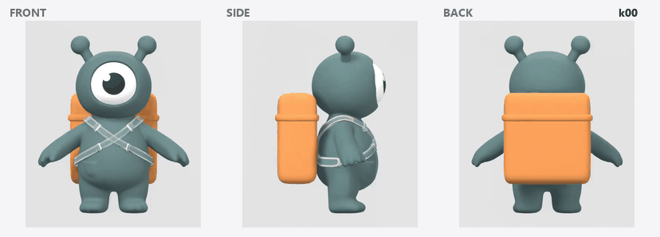
The sheet’s content, one keyframe at a time.
Layout FMM_LAYOUT / triptych_rest.layout.json
Where each panel sits on the canvas, in pixels. Travels through the graph as JSON; Triptych Register adds transform = [sx, sy, ox, oy].
Animate the rig you built from this mesh using the attached keyframe sheet.
The sheet has 16 keyframes down the page and 3 orthographic views across it
(front, side, back). Every view shares one camera scale and one pivot, so a limb at a
given height in the front view is at that same height in the side and back
views. Read the pose from all 3 views together, not from the front alone.
Motion: Raises both arms overhead, holds, then lowers them back down
Timing: 5.0s total at 24 fps, keyframe k00 at t=0.
Loop: no
Do not invent poses between keyframes beyond smooth interpolation, and do not
change the character's proportions -- the mesh is the authority on those, the
sheet is the authority only on pose.
How far a character’s colours have moved from its rest pose, measured so that a change of pose does not count. Each view’s first keyframe is reduced to six dominant colours by k-means; every panel’s subject pixels are assigned to the nearest of them; drift is the displacement of each colour, weighted by the rest pose’s colour mix.
Weighting by the rest pose is what keeps it pose-blind: a raised arm changes how much of a colour is visible, not what the colour is. On the mascot, the measure moves 0.006–0.016 between arms-down and arms-up frames, while an 8/255 red tint reads three times its baseline.
Registration
Frame 0 of an image-to-video clip is nearly the submitted canvas, so the mapping back is read off the two content bounding boxes (flat background, tolerance 18/255):
Accuracy of the split panels against the source, mean absolute error per 255:
What the model returned
Plain split
Registered
Rescaled (MiniMax H3)
0.28
0.85
Letterboxed into 16:9
18.35
0.89
Centre-cropped 6%
20.19
0.54
Thresholds
Check
Value
Where
Identity drift ceiling
0.03
Identity QA · pipeline qa --ceiling
Registration skew warning
2 %
Triptych Register · pipeline keyframes
Background tolerance
18 / 255
content boxes, subject masks
Palette size
6
pipeline qa --colors
Results
Three characters with different body plans, each run end to end once: concept image, Meshy 7 mesh, Blender anchors, MiniMax H3 at 768P for five seconds, sixteen keyframes.
Maximum identity drift per view (front, side, back), against the 0.03 gate.
front
side
back
Character
Canvas
Ratio
Clip
Reg. sx × sy
Skew
Drift mean
Drift max
Gate
Mascot
1904×816
2.333
1536×672, 124 fr @ 24 fps
1.2387 × 1.2133
2.05 %
0.0109
0.0209
pass
Quadruped
2240×960
2.333
1536×672, 124 fr @ 24 fps
1.4579 × 1.4215
2.49 %
0.0119
0.0228
pass
Thin robot
1351×760
1.778
1344×768, 124 fr @ 24 fps
1.0051 × 0.9888
1.62 %
0.0191
0.0522
outside scope
Mascot
Biped clay toy: one eye, antennae, rigid backpack · motion: Raises both arms overhead, holds, then lowers them back down
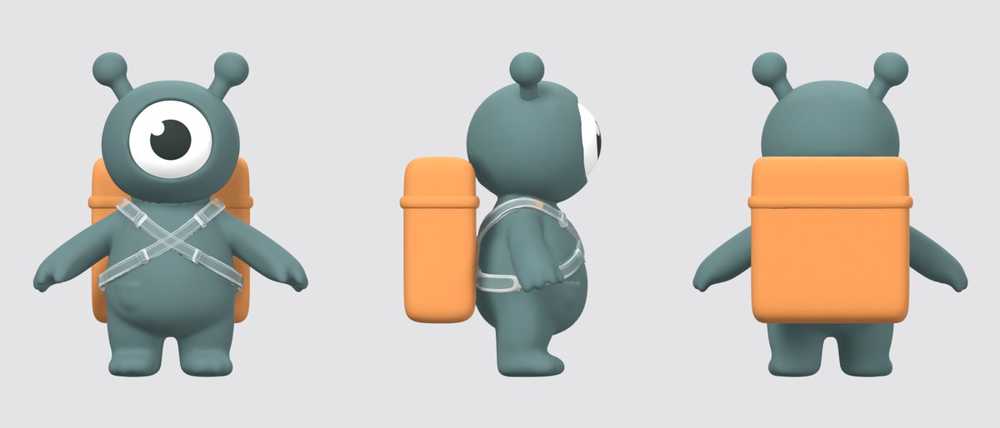
Rest-pose canvas, 1904×816 (21:9).
Animated canvas.
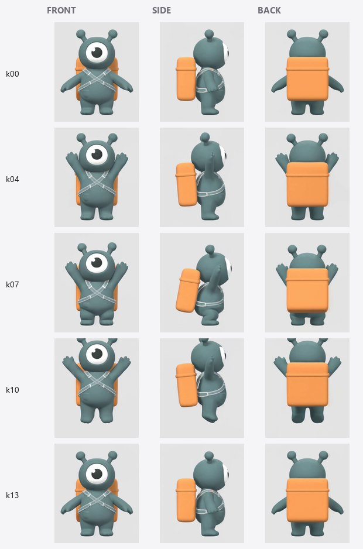
Keyframes k00, k04, k07, k10, k13 as cut from the sheet.
View
Mean drift
Max drift
front
0.0141
0.0194
side
0.0078
0.0188
back
0.0107
0.0209
Timing: 16 keyframes across a 5.17 s clip at 24 fps — k00 0.00s, k03 1.04s, k06 2.04s, k09 3.08s, k12 4.08s, k15 5.12s.
Quadruped
Four-legged creature: long tail, large ears · motion: Rears up onto its hind legs, balances, then drops back onto all fours
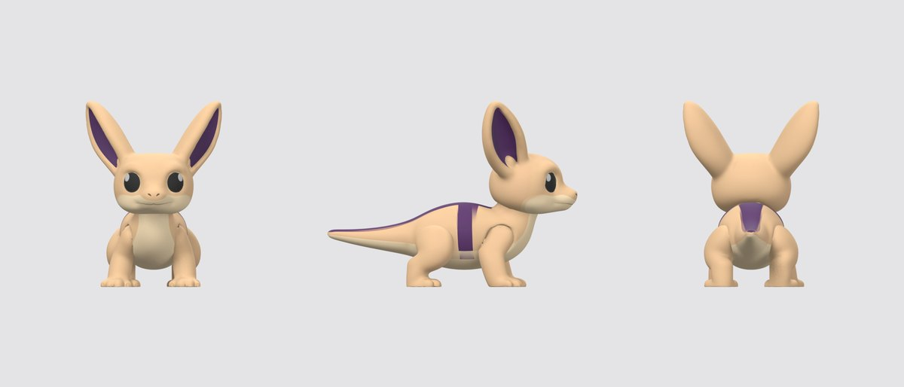
Rest-pose canvas, 2240×960 (21:9).
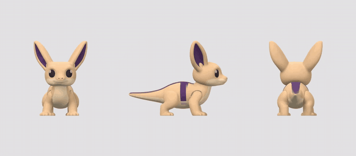
Animated canvas.
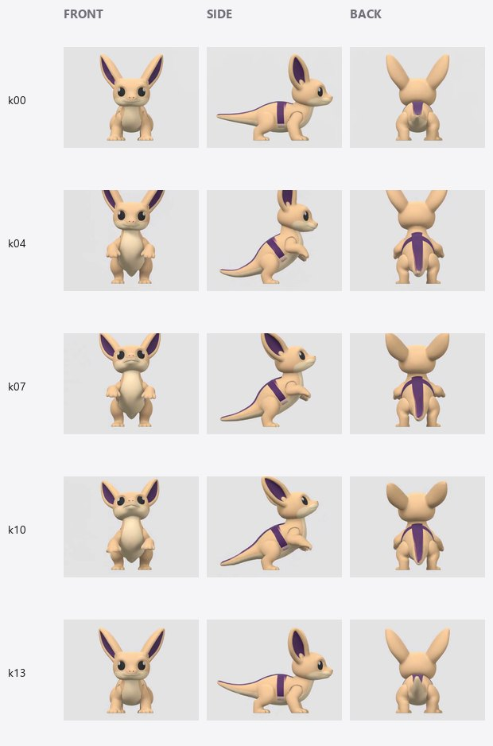
Keyframes k00, k04, k07, k10, k13 as cut from the sheet.
View
Mean drift
Max drift
front
0.0130
0.0221
side
0.0089
0.0122
back
0.0138
0.0228
Timing: 16 keyframes across a 5.17 s clip at 24 fps — k00 0.00s, k03 1.04s, k06 2.04s, k09 3.08s, k12 4.08s, k15 5.12s.
Thin robot
Tall, wire-thin limbs, loose scarf · motion: Raises its right arm and waves twice, then lowers it
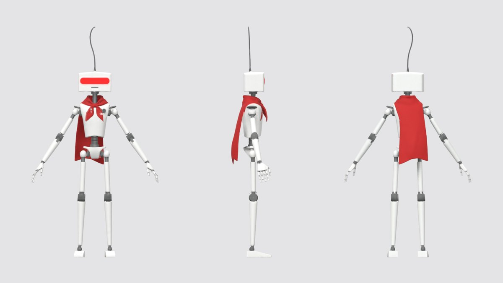
Rest-pose canvas, 1351×760 (16:9).
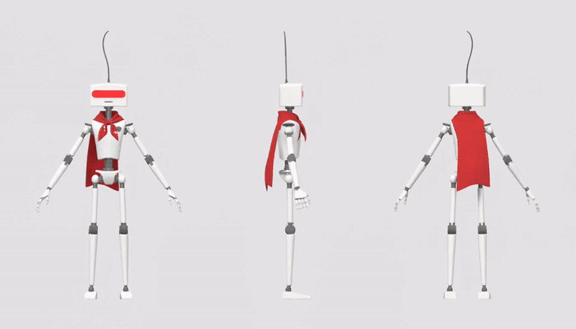
Animated canvas.
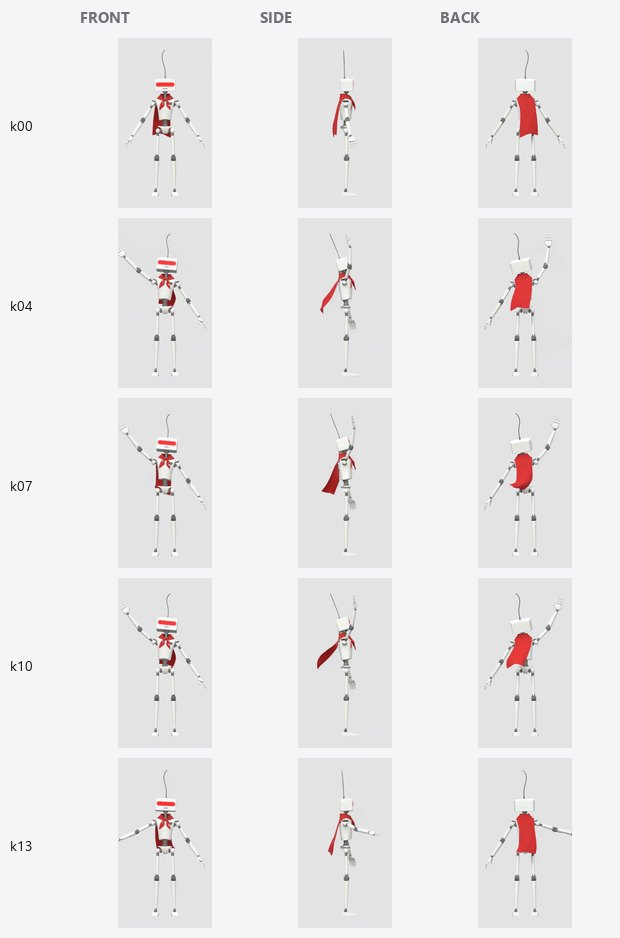
Keyframes k00, k04, k07, k10, k13 as cut from the sheet.
View
Mean drift
Max drift
front
0.0155
0.0288
side
0.0223
0.0522
back
0.0195
0.0440
Timing: 16 keyframes across a 5.17 s clip at 24 fps — k00 0.00s, k03 1.04s, k06 2.04s, k09 3.08s, k12 4.08s, k15 5.12s.
The thin robot’s panels stay synchronised — its one-sided wave appears mirrored correctly in the back view on every keyframe — while its wire-thin profile and loose scarf fall outside the pipeline’s scope and are flagged by the gate.
Scope
Designed for
Chunky, rigid or near-rigid characters, readable from every side, in an A-pose — humanoid or not
Body motion performed in place, one beat per run: raising arms, waving, crouching, stretching, rearing up, nodding, idles
One clip per run, 4–15 s as MiniMax H3 accepts (runs here used 5 s); 16 keyframes by default
Outside its scope
Travelling across the frame — in-place cycles are in scope
Turning on the spot — the panels are defined as front, side, back
Secondary motion: cloth, hair, free-moving parts
Multi-beat sequences — built from several runs sharing end poses
Very thin silhouettes
Stays with you
Rigging and the final animation — Astra, Meshy or a person
The orthographic renders, in Blender with the bundled CLI
A last look at the side column
Usage
Install ComfyUI and the pack: ComfyUI Manager, or comfy node install from-mesh-to-motion.
Sign in to a Comfy account in ComfyUI, or set Settings → API Keys → Comfy API Key. Only the MiniMax node uses it.
Render the views from the pack folder: python -m pipeline anchors --mesh character.glb --out anchors (add --yaw-offset 90 if the character faces the wrong way).
Openworkflows/02_triptych_to_keyframes.json and load beauty_front, beauty_side, beauty_back into the three Load Image nodes.
Write the action in Motion Prompt — only what the character does.
Queue: one paid call, a few minutes; change the seed on the video node for another take.
Check Triptych Register’s skew and Identity QA’s verdict.
Hand over the rigged rest-pose mesh, keyframe_sheet.png and handoff.txt from ComfyUI/output/from_mesh_to_motion/.
Package
Published to the Comfy Registry as from-mesh-to-motion 0.1.1 under @meryboth; a version bump in pyproject.toml publishes through GitHub Actions. The registry package is 27 files, 161 KB; example renders, meshes, clips and the write-ups stay in the repository.
Shipped file
Size
.comfyignore
0.3 KB
.github/workflows/publish_action.yml
0.4 KB
.gitignore
0.2 KB
LICENSE
1.0 KB
README.md
16.8 KB
__init__.py
0.4 KB
blender/render_ortho.py
9.9 KB
comfy_nodes/__init__.py
0.1 KB
comfy_nodes/nodes.py
23.2 KB
config/job.example.json
0.5 KB
config/job.json
0.5 KB
pipeline/__init__.py
0.0 KB
pipeline/__main__.py
0.0 KB
pipeline/cli.py
14.2 KB
pipeline/manifest.py
3.9 KB
pipeline/prompt.py
5.4 KB
pipeline/repair.py
7.7 KB
pipeline/sheet.py
16.0 KB
pipeline/video.py
3.6 KB
pyproject.toml
0.7 KB
requirements.txt
0.4 KB
scripts/build_graph_diagram.py
7.8 KB
scripts/build_workflows.py
15.7 KB
workflows/01_concept_to_mesh.json
3.7 KB
workflows/02_triptych_to_keyframes.json
23.5 KB
workflows/api/01_concept_to_mesh.api.json
0.8 KB
workflows/api/02_triptych_to_keyframes.api.json
4.3 KB
Models used in the documented runs
Concept images
Flux 2 Pro
Meshes
Meshy 7, 25k-face quad remesh, 2k texture
Animation
MiniMax H3 image-to-video, 768P, 5 s, seed 11
Anchors
Blender 5.1 EEVEE, 768 px square, orthographic
Code MIT; the characters, meshes and renders are CC0, generated for this project. Generated 2026-09-22 by scripts/build_reference.py.